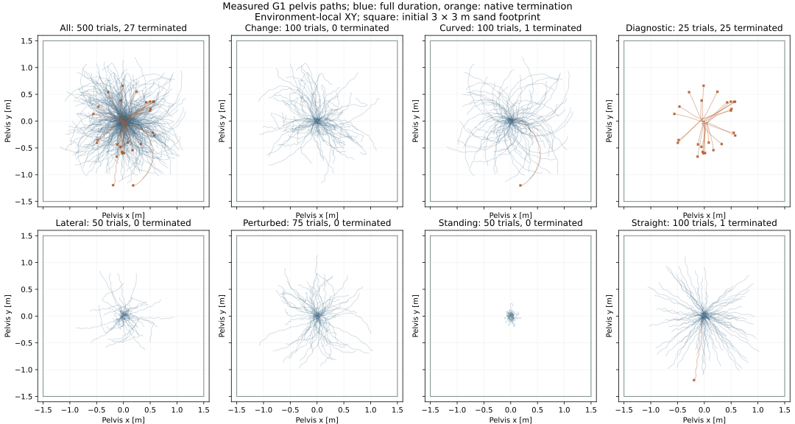
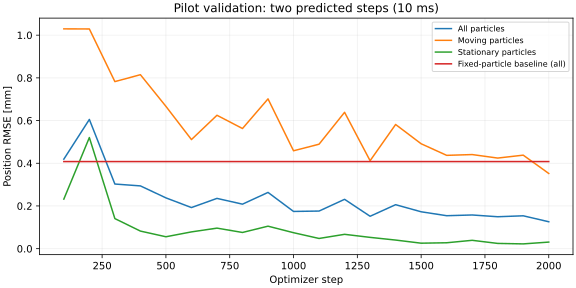
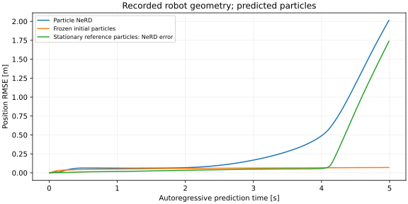
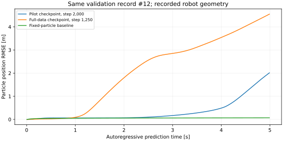

20 October 2026 · OSMO pool isaac-lab-l40s-03 · architecture: Transolver.
Status: 50-trajectory pilot and four-GPU training completed. Full 500-trajectory collection completed; the full dataset passed its audit and eight-GPU optimization is running. The cloud runtime probe completed. Local recording, training, and 200-step coupled-inference checks passed. Both the intermediate and final pilot checkpoints fail long rollouts; measured results and paired videos are below. The baseline dataset uses one sand material; this experiment does not test generalization across material parameters.
| Parameter | Setting |
|---|---|
| Initial sand volume | 3 × 3 × 0.3 m; initial sand surface z = 0; rigid ground beneath the sand and native retaining walls |
| MPM grid / particles | 0.04 m / 88,360 material particles per environment |
| Sand material | Density 1,600 kg/m³; Young modulus 10¹⁵ Pa; Poisson ratio 0.3; internal friction 0.48; yield pressure 10¹⁵ Pa; tensile yield ratio, yield stress, hardening, dilatancy and viscosity all zero |
| Rigid contact friction | 1.0 on robot feet; 0.8 on fixed boundary boxes |
| Physics and recording | 200 Hz, one state every 5 ms |
| Robot policy | Pretrained G1 policy at 50 Hz; native joint actuators and dynamic robot motion |
| Collected dataset | 500 trajectories, up to 5 s each; 400 training / 50 validation / 50 test |
| Motion coverage | 350 locomotion, 75 perturbed-policy, 50 standing and 25 zero/random-action diagnostics; randomized initial heading and commanded direction |
| Pilot subset | 50 trials stratified across motion groups and immutable splits: 17 training / 17 validation / 16 test |
| Storage | 902.52 GB recorded in cloud storage; 484,184 frames. A full five-second trajectory is approximately 1.86 GB with LZF compression. Only checkpoints and a small evaluation subset are downloaded locally. |
Each record contains particle positions and velocities, robot body poses and velocities, joint state, explicitly applied generalized force (Control.joint_f, excluding native actuator output), policy action, command, and material force/torque on each foot. Static records include particle masses, collision-box geometry and material parameters. Native falls end the affected trajectory; reset transitions are excluded.
Inspect all 500 planned command paths. These are integrated commands, not measured robot base paths.

Open full-resolution coverage plot · Dataset audit summary and measured trajectories.
Transolver receives three particle-position frames, current collider geometry and velocity, and material features. It predicts particle displacement for the next 5 ms. Training uses two autoregressive prediction steps and a loss that separately averages moving and stationary particle errors, so stationary particles cannot dominate solely through their count. All particles are processed; no region selector is used in this experiment.
Robot collider motion comes from the reference recording during training. The training split updates model weights; the validation split selects the checkpoint. Test trajectories are reserved for final evaluation. Initial cloud training uses four GPUs with a shared dataset copy; the full dataset job is prepared for eight GPUs.
| Evaluation | What it establishes | Status |
|---|---|---|
| Recorded robot motion + predicted particles | Particle rollout error, stationary drift, and foot penetration with identical reference robot motion | Pending trained checkpoint |
| Particle NeRD + analytical foot forces + MJWarp robot | Coupled robot motion and stability without an MPM solve during inference; policy acts on the evolving robot state | Short integration test passed; trained evaluation pending |
The analytical estimator uses independent native virtual-foot responses and an effective material mass. It is an approximation to articulated contact coupling. Report particle accuracy, sand forces on each foot, pelvis height and horizontal trajectory separately. A successful recording or short training check does not establish learned simulation accuracy.
The pilot models are not usable sand simulators. All 50 recorded trajectories passed the integrity audit: 44 reached five seconds and six ended at native termination. The dataset contains 46,110 frames and 85.95 GB. The fixed split contains 17 training, 17 validation and 16 test trajectories. Audit summary.
| Checkpoint | 10 ms validation RMSE | 4.99 s rollout RMSE, validation #12 |
|---|---|---|
| Pilot, step 600 | 0.192 mm | 3.19 m |
| Pilot, selected final checkpoint, step 2,000 | 0.126 mm | 2.01 m |
| Fixed-particle baseline | 0.408 mm | 0.070 m |

Short validation errors average two predicted steps across 17 validation trajectories. The long rollout initializes three particle frames once, then uses only its own particle predictions and the recorded robot geometry. The two tests measure different prediction horizons.
The final pilot's pelvis-position RMSE is 0.519 m over this paired five-second run; final position difference is 0.687 m. Pelvis height ends at 0.459 m above the initial sand surface, versus 0.617 m for MPM. These are diverging closed-loop motions, so force-profile differences are not force-estimation error on identical motion. Effective material-mass multiplier: 10; contact solver: 50 iterations.

Final pilot robot and force plots · Measured final pilot results.
The earlier G1 force study used effective material-mass multiplier 100 and 200 solver iterations. Applying those settings to validation #12 also fails: native termination at 2.18 s. The multiplier-10 comparison above uses 50 iterations, so this is a comparison of configurations, not an isolated test of one parameter. The full model will use the prior G1 configuration consistently across its three preselected dynamic test scenarios.
Paired animation covers the shared recorded interval; the reference force curves retain the full five-second context. Measured comparison.
Particles visibly drift through the rigid floor. Particle errors · Measured results.

Full-data workflow phase: optimization reached 5,500 of 10,000 steps. Intermediate selected checkpoint at step 1,250: 0.056 mm two-step validation position RMSE across 50 validation trajectories, versus 0.291 mm for fixed particles. Its long rollout on validation #12 still fails, reaching 4.55 m error after 4.99 s. Final checkpoint and test results are pending.
50-trajectory collection workflow · Task dashboard · Resource metrics
Four collection tasks, one GPU and two simulation environments per task. The first attempt completed its first batch but failed on the next native reset because a tensor created in PyTorch inference mode was modified outside that mode. The collector now uses no_grad; two consecutive local batches passed, and the corrected cloud run completed all 50 trajectories. The corrected workers passed consecutive batches. Subsequent two-environment batches take approximately 48–50 s; the initial batch includes kernel compilation. All 16 full-collection tasks completed successfully; cloud storage contains all 500 unique HDF5 trajectories.
Full 500-trajectory workflow · Task dashboard · Resource metrics
Pilot training workflow · Task dashboard · Resource metrics. Pilot training completed successfully after its dataset audit. The full-data workflow is running with eight GPUs and a mandatory audit before weight updates.
Full-dataset training workflow · Task dashboard · Resource metrics. Eight GPUs; 10,000 optimizer steps; initialization from the selected pilot checkpoint. Full dataset audit precedes optimization. The validation set selects the model; afterward, a separate evaluation reports 10 ms prediction errors on all 50 test trajectories. Local long-rollout evaluation uses the preselected straight (#2), curved (#106), and lateral (#306) test scenarios.